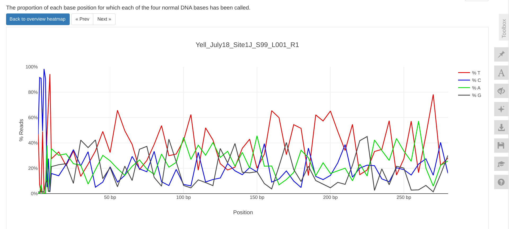

INTRO
In preparation for QIIME 2 analysis for project-eDNA-yellow (GitHub repo) project, we needed to perform adapter/quality trimming of the eDNA FastQs. Additionally, the trimmed filenames were adjusted to account for downstream filename requirements of QIIME 2.
The contents below are from markdown knitted from 01.00-trimming-fastp-fastqc-multiqc.Rmd (commit 9d2b4a6).
1 BACKGROUND
This Rmd file trims FastQ files using fastp (Chen 2023), followed by quality checks with FastQC and MultiQC (Ewels et al. 2016). Additionally, it renames the trimmed FastQ files to be compliant with QIIME 2 naming expectations.
If you need to download the raw sequencing reads, please see 00.00-fastqc-multiqc-raw-reads.Rmd
Inputs:
Paired-end FastQs
- Example filename format:
Yell_July18_Site1f_S92_L001_R[12]_001.fastq.gz
- Example filename format:
Outputs:
Trimmed FastQs.
- Example filename format:
Yell_July18_Site1f_S92_L001_R1.fastp-trim.fastq.gz
- Example filename format:
fastp JSON files.
FastQC HTML files.
MultiQC HTML report.
Software requirements:
2 Set R variables
# Data directories
data_dir <- "/home/sam/gitrepos/RobertsLab/project-eDNA-yellow/data/"
raw_reads_dir <- "/home/sam/gitrepos/RobertsLab/project-eDNA-yellow/data/raw-fastqs"
output_dir <- "/home/sam/gitrepos/RobertsLab/project-eDNA-yellow/output/01.00-trimming-fastp-fastqc-multiqc"
# PROGRAMS
fastp <- "/home/sam/programs/fastp"
fastqc <- "/home/sam/programs/FastQC-0.12.1/fastqc"
multiqc <- "/home/sam/programs/miniforge3/bin/multiqc"
# CPUs
threads <- 4
# Define file patterns
R1_fastq_pattern <- "*_R1_001.fastq.gz"
R2_fastq_pattern <- "*_R2_001.fastq.gz"
# Export these as environment variables for bash chunks.
Sys.setenv(
fastp = fastp,
fastqc = fastqc,
data_dir = data_dir,
multiqc = multiqc,
raw_reads_dir = raw_reads_dir,
threads = threads,
R1_fastq_pattern = R1_fastq_pattern,
R2_fastq_pattern = R2_fastq_pattern,
output_dir = output_dir
)3 Fastp Trimming
fastp (Chen 2023) is set to auto-detect Illumina adapters, as well as trim the first 10bp from each read, as past experience shows these first 10bp are more inconsistent than the remainder of the read length.
Appends _L001 to trimmed filenames for downstream QIIME 2 filename parsing requirements.
# Make output directories, if it doesn't exist
mkdir --parents "${output_dir}"
# Change to raw reads directory
cd "${raw_reads_dir}"
# Create arrays of fastq R1 files and sample names
for fastq in ${R1_fastq_pattern}
do
fastq_array_R1+=("${fastq}")
R1_names_array+=("$(echo "${fastq}" | awk -F'_' '{print $1"_"$2"_"$3"_"$4"_L001"}')")
done
# Create array of fastq R2 files
for fastq in ${R2_fastq_pattern}
do
fastq_array_R2+=("${fastq}")
R2_names_array+=("$(echo "${fastq}" | awk -F"_" '{print $1"_"$2"_"$3"_"$4"_L001"}')")
done
# Create list of fastq files used in analysis
# Create MD5 checksum for reference
if [ ! -f "${output_dir}"/raw-fastq-checksums.md5 ]; then
for fastq in *.gz
do
md5sum "${fastq}" >>"${output_dir}"/raw-fastq-checksums.md5
done
fi
# Run fastp on files
# Adds JSON report output for downstream usage by MultiQC
for index in "${!fastq_array_R1[@]}"
do
R1_sample_name=$(echo "${R1_names_array[index]}")
R2_sample_name=$(echo "${R2_names_array[index]}")
${fastp} \
--in1 ${fastq_array_R1[index]} \
--in2 ${fastq_array_R2[index]} \
--detect_adapter_for_pe \
--trim_front1 20 \
--trim_front2 20 \
--trim_poly_g \
--thread ${threads} \
--html "${output_dir}"/"${R1_sample_name}".fastp-trim.report.html \
--json "${output_dir}"/"${R1_sample_name}".fastp-trim.report.json \
--out1 "${output_dir}"/"${R1_sample_name}"_R1.fastp-trim.fastq.gz \
--out2 "${output_dir}"/"${R2_sample_name}"_R2.fastp-trim.fastq.gz \
2>> "${output_dir}"/"${R1_sample_name}"-fastp.stderr
# Generate md5 checksums for newly trimmed files
cd "${output_dir}"
md5sum "${R1_sample_name}"_R1.fastp-trim.fastq.gz | tee "${R1_sample_name}"_R1.fastp-trim.fastq.gz.md5
md5sum "${R2_sample_name}"_R2.fastp-trim.fastq.gz | tee "${R2_sample_name}"_R2.fastp-trim.fastq.gz.md5
# Change back to previous directory
# Directing to /dev/null prevents printing directory each time.
cd - > /dev/null
done8aaf71fac78f18293155870a5ad785b3 Yell_July18_Site1a_S83_L001_R1.fastp-trim.fastq.gz
97674b5c315b18b1d65dd703301f0cf8 Yell_July18_Site1a_S83_L001_R2.fastp-trim.fastq.gz
8581bbf93dbe9a7c6a6443568b11eaf2 Yell_July18_Site1bb_S139_L001_R1.fastp-trim.fastq.gz
9cac6084d18a18fdd2344a9a57b10403 Yell_July18_Site1bb_S139_L001_R2.fastp-trim.fastq.gz
1246b72b4824c37e054859390148991e Yell_July18_Site1b_S84_L001_R1.fastp-trim.fastq.gz
1bb8c2f3a716a93e126b963ea4cace7a Yell_July18_Site1b_S84_L001_R2.fastp-trim.fastq.gz
e1d79f610c9d4ab430fa87164682cd5d Yell_July18_Site1cc_S140_L001_R1.fastp-trim.fastq.gz
0b639417f1e158661096cd2b22de528d Yell_July18_Site1cc_S140_L001_R2.fastp-trim.fastq.gz
ee1d281b609e1d0ba856594379cce5ab Yell_July18_Site1c_S85_L001_R1.fastp-trim.fastq.gz
206313466fc3767486648dd9389461d9 Yell_July18_Site1c_S85_L001_R2.fastp-trim.fastq.gz
9541e0f8ef84c5e84f6ea651f6791b58 Yell_July18_Site1dd_S141_L001_R1.fastp-trim.fastq.gz
f47df7e27b542984de111c8cd7723bc0 Yell_July18_Site1dd_S141_L001_R2.fastp-trim.fastq.gz
53387ef241a3e8c0143841871ca9dfd2 Yell_July18_Site1d_S86_L001_R1.fastp-trim.fastq.gz
97ada736a1c7a8443f3767735a3f4af2 Yell_July18_Site1d_S86_L001_R2.fastp-trim.fastq.gz
be2502232114fbb0e8d90566e19eb3bd Yell_July18_Site1ee_S142_L001_R1.fastp-trim.fastq.gz
5261ca016825c7b5d450dfbe01c60768 Yell_July18_Site1ee_S142_L001_R2.fastp-trim.fastq.gz
25a8c59b65537de78c48631eb06b510e Yell_July18_Site1e_S91_L001_R1.fastp-trim.fastq.gz
4e822610766ef7ba0edff4b006a2399a Yell_July18_Site1e_S91_L001_R2.fastp-trim.fastq.gz
515a2c77896fcd68ab258ac0cd8eab2a Yell_July18_Site1f_S92_L001_R1.fastp-trim.fastq.gz
f2698536a899157de64bdd209c1da4e1 Yell_July18_Site1f_S92_L001_R2.fastp-trim.fastq.gz
dbf74d130be8e07cd002098f37a035fe Yell_July18_Site1g_S93_L001_R1.fastp-trim.fastq.gz
0c3ce2ce7409f9336ca794235d11bda3 Yell_July18_Site1g_S93_L001_R2.fastp-trim.fastq.gz
6f0cf41ff0621d8cf3e0b8c556b77e50 Yell_July18_Site1h_S94_L001_R1.fastp-trim.fastq.gz
a4d6e23c32fb28b0498f0b244ee91a79 Yell_July18_Site1h_S94_L001_R2.fastp-trim.fastq.gz
4829027bca04743495259631a1b1eca3 Yell_July18_Site1J_S99_L001_R1.fastp-trim.fastq.gz
4cadf419f24f0a2c0f3233372e6ea64e Yell_July18_Site1J_S99_L001_R2.fastp-trim.fastq.gz
a83ad57c90291aa2017d2537635e66f8 Yell_July18_Site1k_S100_L001_R1.fastp-trim.fastq.gz
7454d28afadb600434f4496ad632e12c Yell_July18_Site1k_S100_L001_R2.fastp-trim.fastq.gz
06acae67aeb668d5b4fec20beb69c98a Yell_July18_Site1L_S101_L001_R1.fastp-trim.fastq.gz
5a50bf8f326a11caa43bc70730faa1c5 Yell_July18_Site1L_S101_L001_R2.fastp-trim.fastq.gz
ba80095123abce2ab4663f0764512615 Yell_July18_Site1m_S102_L001_R1.fastp-trim.fastq.gz
5bf93acb6681d64c8d72217fc296c379 Yell_July18_Site1m_S102_L001_R2.fastp-trim.fastq.gz
a75988d7ceb2c2b45961b758b45beb31 Yell_July18_Site1n_S103_L001_R1.fastp-trim.fastq.gz
6429f9f4b270c45a235f3c9692046de9 Yell_July18_Site1n_S103_L001_R2.fastp-trim.fastq.gz
b0caaeb57060745075c54435aee49ac5 Yell_July18_Site1o_S104_L001_R1.fastp-trim.fastq.gz
d22783c7530a0fdf873e872e07094746 Yell_July18_Site1o_S104_L001_R2.fastp-trim.fastq.gz
f523c3b03f8812df8761f790ba623eac Yell_July18_Site1p_S105_L001_R1.fastp-trim.fastq.gz
03aea60308b0a2cff891b89eff355d2f Yell_July18_Site1p_S105_L001_R2.fastp-trim.fastq.gz
8f2eb5db49a151fe276fe171c542d047 Yell_July18_Site1q_S106_L001_R1.fastp-trim.fastq.gz
0cf20078b76b4347c94c3ae77b2661d7 Yell_July18_Site1q_S106_L001_R2.fastp-trim.fastq.gz
09732612243841b02949b81277d8c773 Yell_July18_Site1r_S111_L001_R1.fastp-trim.fastq.gz
38f855e73282ca882fdcee1403472e5d Yell_July18_Site1r_S111_L001_R2.fastp-trim.fastq.gz
593e0e7cfba4e5a68559b825b977242d Yell_July18_Site1s_S112_L001_R1.fastp-trim.fastq.gz
12d0370983ede990ddf2ac07b0cf758c Yell_July18_Site1s_S112_L001_R2.fastp-trim.fastq.gz
8f52b61eda289215c89485eec951e44f Yell_July18_Site1t_S113_L001_R1.fastp-trim.fastq.gz
dc0fac87a5a4f5566dffa6613d53deb2 Yell_July18_Site1t_S113_L001_R2.fastp-trim.fastq.gz
30956b911fd2e2f24ab4ccc0c573731e Yell_July18_Site1U_S114_L001_R1.fastp-trim.fastq.gz
cd55f7443d273282fa708a100178441f Yell_July18_Site1U_S114_L001_R2.fastp-trim.fastq.gz
c4a3a5562592217bd7e8d00afef68aca Yell_July18_Site1v_S117_L001_R1.fastp-trim.fastq.gz
9045dec9d94aa7abae62f87c6aedf887 Yell_July18_Site1v_S117_L001_R2.fastp-trim.fastq.gz
c5cf4558d20d7eb11005822f840fe5e9 Yell_July18_Site1w_S118_L001_R1.fastp-trim.fastq.gz
659fdc3781371ce4633158f3715b146d Yell_July18_Site1w_S118_L001_R2.fastp-trim.fastq.gz
ffa9195d6deefec0c68545eb2414cc1e Yell_July18_Site1y_S120_L001_R1.fastp-trim.fastq.gz
6b4807441251796f88bfc296a5deca6b Yell_July18_Site1y_S120_L001_R2.fastp-trim.fastq.gz
9315432c107813a21c7957f2c0d08ed0 Yell_July18_Site1z_S129_L001_R1.fastp-trim.fastq.gz
10b325405136f1aed3f2893875c69f18 Yell_July18_Site1z_S129_L001_R2.fastp-trim.fastq.gz
5762e0cf30216d3e24d1c243f2558513 Yell_July18_Site5aa_S132_L001_R1.fastp-trim.fastq.gz
f0953177a84c0f501415add9c873012f Yell_July18_Site5aa_S132_L001_R2.fastp-trim.fastq.gz
a1930e5eb162b0ded2f02ce626ce6242 Yell_July18_Site5a_S87_L001_R1.fastp-trim.fastq.gz
a89ee788797cb710e3ab81678aa960d2 Yell_July18_Site5a_S87_L001_R2.fastp-trim.fastq.gz
ee7c34fc56c2792ad55c73e7f693460c Yell_July18_Site5bb_S133_L001_R1.fastp-trim.fastq.gz
e7b8a722ed5f771772d31ce46d74e64f Yell_July18_Site5bb_S133_L001_R2.fastp-trim.fastq.gz
12fff50ad0731eb524d1f2201a247a64 Yell_July18_Site5b_S88_L001_R1.fastp-trim.fastq.gz
04740ff92fbe6ec1f4c16d52edfa410d Yell_July18_Site5b_S88_L001_R2.fastp-trim.fastq.gz
87a5ac12247a4f5c4e0638d031317bb9 Yell_July18_Site5cc_S134_L001_R1.fastp-trim.fastq.gz
80958be5b5221a1381db5fcdf05ba034 Yell_July18_Site5cc_S134_L001_R2.fastp-trim.fastq.gz
f194b5e2f3e75418ed77679138f59837 Yell_July18_Site5c_S89_L001_R1.fastp-trim.fastq.gz
5ba8d21028e58b80c3e46cea97205877 Yell_July18_Site5c_S89_L001_R2.fastp-trim.fastq.gz
9a965e2bfb8749d21a1061d7e64771c8 Yell_July18_Site5ee_S136_L001_R1.fastp-trim.fastq.gz
721f85fe480672e7592133a4d844910e Yell_July18_Site5ee_S136_L001_R2.fastp-trim.fastq.gz
d35dfb11147f6704f7ba8f2c51405497 Yell_July18_Site5e_S95_L001_R1.fastp-trim.fastq.gz
59b45bdec09b28dcbba42d2a5efbe3f9 Yell_July18_Site5e_S95_L001_R2.fastp-trim.fastq.gz
4d923a5e87234327ee4b75541e6753ee Yell_July18_Site5ff_S137_L001_R1.fastp-trim.fastq.gz
44bd520d27855eca3710239f1903b510 Yell_July18_Site5ff_S137_L001_R2.fastp-trim.fastq.gz
5d904b2b63cc83ee889e576dc2c31c34 Yell_July18_Site5f_S96_L001_R1.fastp-trim.fastq.gz
c5214749a8a7350d94a569745eb4796d Yell_July18_Site5f_S96_L001_R2.fastp-trim.fastq.gz
3c3de33d88a1458ef44d1575cc7c0bc1 Yell_July18_Site5g_S97_L001_R1.fastp-trim.fastq.gz
faafeab62cdcea2fa18e45c0d07eb39e Yell_July18_Site5g_S97_L001_R2.fastp-trim.fastq.gz
8189dd5b62d3bc273d44d3ecdbf2a30b Yell_July18_Site5h_S98_L001_R1.fastp-trim.fastq.gz
b0a04485cd47f593d21bab691881526b Yell_July18_Site5h_S98_L001_R2.fastp-trim.fastq.gz
391361dbbea6ea843444d039e956281f Yell_July18_Site5J_S107_L001_R1.fastp-trim.fastq.gz
f40eb23d525bbca759d4fdc4570e4ec7 Yell_July18_Site5J_S107_L001_R2.fastp-trim.fastq.gz
c3da677478056c52a22cbe8d82ed549e Yell_July18_Site5k_S108_L001_R1.fastp-trim.fastq.gz
49b642aedc0ab037165e1f4d30deb3e6 Yell_July18_Site5k_S108_L001_R2.fastp-trim.fastq.gz
a9990b1563964cd92cedd096fbae374c Yell_July18_Site5L_S109_L001_R1.fastp-trim.fastq.gz
3a373edc3a42fef99ff8cb2af598b083 Yell_July18_Site5L_S109_L001_R2.fastp-trim.fastq.gz
1ea2789de747a68f172b17b8a92ac9aa Yell_July18_Site5m_S110_L001_R1.fastp-trim.fastq.gz
3b09623221c7feee3ae437ed98daa793 Yell_July18_Site5m_S110_L001_R2.fastp-trim.fastq.gz
d3dd601918da9a53e01652f55be56c9e Yell_July18_Site5n_S115_L001_R1.fastp-trim.fastq.gz
7a96bba9597b49560b217dc66dc4f7d1 Yell_July18_Site5n_S115_L001_R2.fastp-trim.fastq.gz
3742ec5d5da634361de9be32bbdac133 Yell_July18_Site5o_S116_L001_R1.fastp-trim.fastq.gz
5aa0261b0ba53542abe1e807cf3d7400 Yell_July18_Site5o_S116_L001_R2.fastp-trim.fastq.gz
c3cb63e4427b5c701a09dc4c97ffde8f Yell_July18_Site5p_S121_L001_R1.fastp-trim.fastq.gz
5f5536f37eab281541d78f3474c6d7ae Yell_July18_Site5p_S121_L001_R2.fastp-trim.fastq.gz
b647652678efc16348e43e911d73eca3 Yell_July18_Site5q_S122_L001_R1.fastp-trim.fastq.gz
58316f0b3d5422a97fd79e3710b60141 Yell_July18_Site5q_S122_L001_R2.fastp-trim.fastq.gz
bc79ce422d33a70047caea95f20fb564 Yell_July18_Site5r_S123_L001_R1.fastp-trim.fastq.gz
0cbab3f554b88283f8221622fe7d90aa Yell_July18_Site5r_S123_L001_R2.fastp-trim.fastq.gz
0d20bf34943af844bfed49169993a818 Yell_July18_Site5s_S124_L001_R1.fastp-trim.fastq.gz
f3c40f4d927c7a51d15cf05274be99fa Yell_July18_Site5s_S124_L001_R2.fastp-trim.fastq.gz
803db24bd314cd7e3d314b1b8f0b84b2 Yell_July18_Site5u_S126_L001_R1.fastp-trim.fastq.gz
2bc8d78ff999dd579c3753ade627c795 Yell_July18_Site5u_S126_L001_R2.fastp-trim.fastq.gz
a24082a508d3d14c817e98a35eaf2130 Yell_July18_Site5v_S127_L001_R1.fastp-trim.fastq.gz
39ae4d0f9ea80fbd21ef798c9dd38086 Yell_July18_Site5v_S127_L001_R2.fastp-trim.fastq.gz
de061e7ba1fe7e7f7b83bfc0912b0d02 Yell_July18_Site5w_S128_L001_R1.fastp-trim.fastq.gz
4c79dec89144623496dbab6c9dfa0252 Yell_July18_Site5w_S128_L001_R2.fastp-trim.fastq.gz
dc899975947bf512f6402d888b59980b Yell_July18_Site5z_S131_L001_R1.fastp-trim.fastq.gz
73a4e01e0ef5b883e5529244bb7100bd Yell_July18_Site5z_S131_L001_R2.fastp-trim.fastq.gz4 FastQC/MultiQC on trimmed reads
4.1 Create FastQ list to use across chunks
# Create the fastq list and string
trimmed_fastqs_list <- list.files(path = Sys.getenv("output_dir"), pattern = "\\.fastq\\.gz$", full.names = TRUE)
trimmed_fastqs_string <- paste(trimmed_fastqs_list, collapse = " ")
# Update the environment variable with the actual string
Sys.setenv(trimmed_fastqs_string = trimmed_fastqs_string)4.2 Run FastQC/MultiQC
# Make output directory if it doesn't exist
mkdir --parents "${output_dir}"
cd "${output_dir}"
############ RUN FASTQC ############
# Create array of trimmed FastQs
# Access the individual FastQ files from the array
IFS=' ' read -r -a trimmed_fastqs_array <<< "${trimmed_fastqs_string}"
# Pass array contents to new variable as space-delimited list
trimmed_fastqc_list=$(echo "${trimmed_fastqs_array[*]}")
echo "Beginning FastQC on raw reads..."
echo ""
# Run FastQC
### NOTE: Do NOT quote trimmed_fastqc_list
${fastqc} \
--threads ${threads} \
--outdir ${output_dir} \
--quiet \
${trimmed_fastqc_list}
echo "FastQC on raw reads complete!"
echo ""
############ END FASTQC ############
############ RUN MULTIQC ############
echo "Beginning MultiQC on raw FastQC..."
echo ""
${multiqc} --interactive \
${output_dir} \
-o ${output_dir}
echo ""
echo "MultiQC on raw FastQs complete."
echo ""
############ END MULTIQC ############
echo "Removing FastQC zip files."
echo ""
rm ${output_dir}/*.zip
echo "FastQC zip files removed."
echo ""Beginning FastQC on raw reads...
application/gzip
application/gzip
application/gzip
application/gzip
application/gzip
application/gzip
application/gzip
application/gzip
application/gzip
application/gzip
application/gzip
application/gzip
application/gzip
application/gzip
application/gzip
application/gzip
application/gzip
application/gzip
application/gzip
application/gzip
application/gzip
application/gzip
application/gzip
application/gzip
application/gzip
application/gzip
application/gzip
application/gzip
application/gzip
application/gzip
application/gzip
application/gzip
application/gzip
application/gzip
application/gzip
application/gzip
application/gzip
application/gzip
application/gzip
application/gzip
application/gzip
application/gzip
application/gzip
application/gzip
application/gzip
application/gzip
application/gzip
application/gzip
application/gzip
application/gzip
application/gzip
application/gzip
application/gzip
application/gzip
application/gzip
application/gzip
application/gzip
application/gzip
application/gzip
application/gzip
application/gzip
application/gzip
application/gzip
application/gzip
application/gzip
application/gzip
application/gzip
application/gzip
application/gzip
application/gzip
application/gzip
application/gzip
application/gzip
application/gzip
application/gzip
application/gzip
application/gzip
application/gzip
application/gzip
application/gzip
application/gzip
application/gzip
application/gzip
application/gzip
application/gzip
application/gzip
application/gzip
application/gzip
application/gzip
application/gzip
application/gzip
application/gzip
application/gzip
application/gzip
application/gzip
application/gzip
application/gzip
application/gzip
application/gzip
application/gzip
application/gzip
application/gzip
application/gzip
application/gzip
application/gzip
application/gzip
application/gzip
application/gzip
FastQC on raw reads complete!
Beginning MultiQC on raw FastQC...
/// MultiQC 🔍 v1.28
file_search | Search path: /home/sam/gitrepos/RobertsLab/project-eDNA-yellow/output/01.00-trimming-fastp-fastqc-multiqc
fastp | Found 54 reports
fastqc | Found 108 reports
write_results | Data : multiqc_data
write_results | Report : multiqc_report.html
multiqc | MultiQC complete
MultiQC on raw FastQs complete.
Removing FastQC zip files.
FastQC zip files removed.4.3 List output files
cd "${output_dir}"
ls -lhtotal 1.3G
drwxrwxr-x 2 sam sam 4.0K Apr 18 12:48 multiqc_data
-rw-rw-r-- 1 sam sam 8.0M Apr 18 12:48 multiqc_report.html
-rw-rw-r-- 1 sam sam 7.8K Apr 18 12:26 raw-fastq-checksums.md5
-rw-rw-r-- 1 sam sam 2.1K Apr 18 12:27 Yell_July18_Site1a_S83_L001-fastp.stderr
-rw-rw-r-- 1 sam sam 489K Apr 18 12:27 Yell_July18_Site1a_S83_L001.fastp-trim.report.html
-rw-rw-r-- 1 sam sam 174K Apr 18 12:27 Yell_July18_Site1a_S83_L001.fastp-trim.report.json
-rw-rw-r-- 1 sam sam 922K Apr 18 12:46 Yell_July18_Site1a_S83_L001_R1.fastp-trim_fastqc.html
-rw-rw-r-- 1 sam sam 9.7M Apr 18 12:27 Yell_July18_Site1a_S83_L001_R1.fastp-trim.fastq.gz
-rw-rw-r-- 1 sam sam 85 Apr 18 12:27 Yell_July18_Site1a_S83_L001_R1.fastp-trim.fastq.gz.md5
-rw-rw-r-- 1 sam sam 915K Apr 18 12:46 Yell_July18_Site1a_S83_L001_R2.fastp-trim_fastqc.html
-rw-rw-r-- 1 sam sam 11M Apr 18 12:27 Yell_July18_Site1a_S83_L001_R2.fastp-trim.fastq.gz
-rw-rw-r-- 1 sam sam 85 Apr 18 12:27 Yell_July18_Site1a_S83_L001_R2.fastp-trim.fastq.gz.md5
-rw-rw-r-- 1 sam sam 2.1K Apr 18 12:27 Yell_July18_Site1bb_S139_L001-fastp.stderr
-rw-rw-r-- 1 sam sam 488K Apr 18 12:27 Yell_July18_Site1bb_S139_L001.fastp-trim.report.html
-rw-rw-r-- 1 sam sam 174K Apr 18 12:27 Yell_July18_Site1bb_S139_L001.fastp-trim.report.json
-rw-rw-r-- 1 sam sam 922K Apr 18 12:46 Yell_July18_Site1bb_S139_L001_R1.fastp-trim_fastqc.html
-rw-rw-r-- 1 sam sam 7.0M Apr 18 12:27 Yell_July18_Site1bb_S139_L001_R1.fastp-trim.fastq.gz
-rw-rw-r-- 1 sam sam 87 Apr 18 12:27 Yell_July18_Site1bb_S139_L001_R1.fastp-trim.fastq.gz.md5
-rw-rw-r-- 1 sam sam 932K Apr 18 12:46 Yell_July18_Site1bb_S139_L001_R2.fastp-trim_fastqc.html
-rw-rw-r-- 1 sam sam 7.5M Apr 18 12:27 Yell_July18_Site1bb_S139_L001_R2.fastp-trim.fastq.gz
-rw-rw-r-- 1 sam sam 87 Apr 18 12:27 Yell_July18_Site1bb_S139_L001_R2.fastp-trim.fastq.gz.md5
-rw-rw-r-- 1 sam sam 2.1K Apr 18 12:28 Yell_July18_Site1b_S84_L001-fastp.stderr
-rw-rw-r-- 1 sam sam 488K Apr 18 12:28 Yell_July18_Site1b_S84_L001.fastp-trim.report.html
-rw-rw-r-- 1 sam sam 173K Apr 18 12:28 Yell_July18_Site1b_S84_L001.fastp-trim.report.json
-rw-rw-r-- 1 sam sam 919K Apr 18 12:46 Yell_July18_Site1b_S84_L001_R1.fastp-trim_fastqc.html
-rw-rw-r-- 1 sam sam 9.2M Apr 18 12:28 Yell_July18_Site1b_S84_L001_R1.fastp-trim.fastq.gz
-rw-rw-r-- 1 sam sam 85 Apr 18 12:28 Yell_July18_Site1b_S84_L001_R1.fastp-trim.fastq.gz.md5
-rw-rw-r-- 1 sam sam 910K Apr 18 12:46 Yell_July18_Site1b_S84_L001_R2.fastp-trim_fastqc.html
-rw-rw-r-- 1 sam sam 10M Apr 18 12:28 Yell_July18_Site1b_S84_L001_R2.fastp-trim.fastq.gz
-rw-rw-r-- 1 sam sam 85 Apr 18 12:28 Yell_July18_Site1b_S84_L001_R2.fastp-trim.fastq.gz.md5
-rw-rw-r-- 1 sam sam 2.1K Apr 18 12:28 Yell_July18_Site1cc_S140_L001-fastp.stderr
-rw-rw-r-- 1 sam sam 490K Apr 18 12:28 Yell_July18_Site1cc_S140_L001.fastp-trim.report.html
-rw-rw-r-- 1 sam sam 175K Apr 18 12:28 Yell_July18_Site1cc_S140_L001.fastp-trim.report.json
-rw-rw-r-- 1 sam sam 924K Apr 18 12:46 Yell_July18_Site1cc_S140_L001_R1.fastp-trim_fastqc.html
-rw-rw-r-- 1 sam sam 17M Apr 18 12:28 Yell_July18_Site1cc_S140_L001_R1.fastp-trim.fastq.gz
-rw-rw-r-- 1 sam sam 87 Apr 18 12:28 Yell_July18_Site1cc_S140_L001_R1.fastp-trim.fastq.gz.md5
-rw-rw-r-- 1 sam sam 914K Apr 18 12:46 Yell_July18_Site1cc_S140_L001_R2.fastp-trim_fastqc.html
-rw-rw-r-- 1 sam sam 19M Apr 18 12:28 Yell_July18_Site1cc_S140_L001_R2.fastp-trim.fastq.gz
-rw-rw-r-- 1 sam sam 87 Apr 18 12:28 Yell_July18_Site1cc_S140_L001_R2.fastp-trim.fastq.gz.md5
-rw-rw-r-- 1 sam sam 2.1K Apr 18 12:29 Yell_July18_Site1c_S85_L001-fastp.stderr
-rw-rw-r-- 1 sam sam 487K Apr 18 12:29 Yell_July18_Site1c_S85_L001.fastp-trim.report.html
-rw-rw-r-- 1 sam sam 173K Apr 18 12:29 Yell_July18_Site1c_S85_L001.fastp-trim.report.json
-rw-rw-r-- 1 sam sam 932K Apr 18 12:46 Yell_July18_Site1c_S85_L001_R1.fastp-trim_fastqc.html
-rw-rw-r-- 1 sam sam 6.8M Apr 18 12:29 Yell_July18_Site1c_S85_L001_R1.fastp-trim.fastq.gz
-rw-rw-r-- 1 sam sam 85 Apr 18 12:29 Yell_July18_Site1c_S85_L001_R1.fastp-trim.fastq.gz.md5
-rw-rw-r-- 1 sam sam 937K Apr 18 12:46 Yell_July18_Site1c_S85_L001_R2.fastp-trim_fastqc.html
-rw-rw-r-- 1 sam sam 7.4M Apr 18 12:29 Yell_July18_Site1c_S85_L001_R2.fastp-trim.fastq.gz
-rw-rw-r-- 1 sam sam 85 Apr 18 12:29 Yell_July18_Site1c_S85_L001_R2.fastp-trim.fastq.gz.md5
-rw-rw-r-- 1 sam sam 2.1K Apr 18 12:29 Yell_July18_Site1dd_S141_L001-fastp.stderr
-rw-rw-r-- 1 sam sam 489K Apr 18 12:29 Yell_July18_Site1dd_S141_L001.fastp-trim.report.html
-rw-rw-r-- 1 sam sam 175K Apr 18 12:29 Yell_July18_Site1dd_S141_L001.fastp-trim.report.json
-rw-rw-r-- 1 sam sam 931K Apr 18 12:46 Yell_July18_Site1dd_S141_L001_R1.fastp-trim_fastqc.html
-rw-rw-r-- 1 sam sam 19M Apr 18 12:29 Yell_July18_Site1dd_S141_L001_R1.fastp-trim.fastq.gz
-rw-rw-r-- 1 sam sam 87 Apr 18 12:29 Yell_July18_Site1dd_S141_L001_R1.fastp-trim.fastq.gz.md5
-rw-rw-r-- 1 sam sam 936K Apr 18 12:46 Yell_July18_Site1dd_S141_L001_R2.fastp-trim_fastqc.html
-rw-rw-r-- 1 sam sam 19M Apr 18 12:29 Yell_July18_Site1dd_S141_L001_R2.fastp-trim.fastq.gz
-rw-rw-r-- 1 sam sam 87 Apr 18 12:29 Yell_July18_Site1dd_S141_L001_R2.fastp-trim.fastq.gz.md5
-rw-rw-r-- 1 sam sam 2.1K Apr 18 12:29 Yell_July18_Site1d_S86_L001-fastp.stderr
-rw-rw-r-- 1 sam sam 488K Apr 18 12:29 Yell_July18_Site1d_S86_L001.fastp-trim.report.html
-rw-rw-r-- 1 sam sam 174K Apr 18 12:29 Yell_July18_Site1d_S86_L001.fastp-trim.report.json
-rw-rw-r-- 1 sam sam 922K Apr 18 12:46 Yell_July18_Site1d_S86_L001_R1.fastp-trim_fastqc.html
-rw-rw-r-- 1 sam sam 9.5M Apr 18 12:29 Yell_July18_Site1d_S86_L001_R1.fastp-trim.fastq.gz
-rw-rw-r-- 1 sam sam 85 Apr 18 12:29 Yell_July18_Site1d_S86_L001_R1.fastp-trim.fastq.gz.md5
-rw-rw-r-- 1 sam sam 935K Apr 18 12:46 Yell_July18_Site1d_S86_L001_R2.fastp-trim_fastqc.html
-rw-rw-r-- 1 sam sam 11M Apr 18 12:29 Yell_July18_Site1d_S86_L001_R2.fastp-trim.fastq.gz
-rw-rw-r-- 1 sam sam 85 Apr 18 12:29 Yell_July18_Site1d_S86_L001_R2.fastp-trim.fastq.gz.md5
-rw-rw-r-- 1 sam sam 2.1K Apr 18 12:30 Yell_July18_Site1ee_S142_L001-fastp.stderr
-rw-rw-r-- 1 sam sam 489K Apr 18 12:30 Yell_July18_Site1ee_S142_L001.fastp-trim.report.html
-rw-rw-r-- 1 sam sam 174K Apr 18 12:30 Yell_July18_Site1ee_S142_L001.fastp-trim.report.json
-rw-rw-r-- 1 sam sam 944K Apr 18 12:46 Yell_July18_Site1ee_S142_L001_R1.fastp-trim_fastqc.html
-rw-rw-r-- 1 sam sam 12M Apr 18 12:30 Yell_July18_Site1ee_S142_L001_R1.fastp-trim.fastq.gz
-rw-rw-r-- 1 sam sam 87 Apr 18 12:30 Yell_July18_Site1ee_S142_L001_R1.fastp-trim.fastq.gz.md5
-rw-rw-r-- 1 sam sam 952K Apr 18 12:46 Yell_July18_Site1ee_S142_L001_R2.fastp-trim_fastqc.html
-rw-rw-r-- 1 sam sam 11M Apr 18 12:30 Yell_July18_Site1ee_S142_L001_R2.fastp-trim.fastq.gz
-rw-rw-r-- 1 sam sam 87 Apr 18 12:30 Yell_July18_Site1ee_S142_L001_R2.fastp-trim.fastq.gz.md5
-rw-rw-r-- 1 sam sam 2.1K Apr 18 12:30 Yell_July18_Site1e_S91_L001-fastp.stderr
-rw-rw-r-- 1 sam sam 484K Apr 18 12:30 Yell_July18_Site1e_S91_L001.fastp-trim.report.html
-rw-rw-r-- 1 sam sam 170K Apr 18 12:30 Yell_July18_Site1e_S91_L001.fastp-trim.report.json
-rw-rw-r-- 1 sam sam 921K Apr 18 12:46 Yell_July18_Site1e_S91_L001_R1.fastp-trim_fastqc.html
-rw-rw-r-- 1 sam sam 1.6M Apr 18 12:30 Yell_July18_Site1e_S91_L001_R1.fastp-trim.fastq.gz
-rw-rw-r-- 1 sam sam 85 Apr 18 12:30 Yell_July18_Site1e_S91_L001_R1.fastp-trim.fastq.gz.md5
-rw-rw-r-- 1 sam sam 930K Apr 18 12:46 Yell_July18_Site1e_S91_L001_R2.fastp-trim_fastqc.html
-rw-rw-r-- 1 sam sam 1.7M Apr 18 12:30 Yell_July18_Site1e_S91_L001_R2.fastp-trim.fastq.gz
-rw-rw-r-- 1 sam sam 85 Apr 18 12:30 Yell_July18_Site1e_S91_L001_R2.fastp-trim.fastq.gz.md5
-rw-rw-r-- 1 sam sam 2.1K Apr 18 12:30 Yell_July18_Site1f_S92_L001-fastp.stderr
-rw-rw-r-- 1 sam sam 489K Apr 18 12:30 Yell_July18_Site1f_S92_L001.fastp-trim.report.html
-rw-rw-r-- 1 sam sam 175K Apr 18 12:30 Yell_July18_Site1f_S92_L001.fastp-trim.report.json
-rw-rw-r-- 1 sam sam 904K Apr 18 12:46 Yell_July18_Site1f_S92_L001_R1.fastp-trim_fastqc.html
-rw-rw-r-- 1 sam sam 11M Apr 18 12:30 Yell_July18_Site1f_S92_L001_R1.fastp-trim.fastq.gz
-rw-rw-r-- 1 sam sam 85 Apr 18 12:30 Yell_July18_Site1f_S92_L001_R1.fastp-trim.fastq.gz.md5
-rw-rw-r-- 1 sam sam 918K Apr 18 12:46 Yell_July18_Site1f_S92_L001_R2.fastp-trim_fastqc.html
-rw-rw-r-- 1 sam sam 12M Apr 18 12:30 Yell_July18_Site1f_S92_L001_R2.fastp-trim.fastq.gz
-rw-rw-r-- 1 sam sam 85 Apr 18 12:30 Yell_July18_Site1f_S92_L001_R2.fastp-trim.fastq.gz.md5
-rw-rw-r-- 1 sam sam 2.1K Apr 18 12:31 Yell_July18_Site1g_S93_L001-fastp.stderr
-rw-rw-r-- 1 sam sam 488K Apr 18 12:31 Yell_July18_Site1g_S93_L001.fastp-trim.report.html
-rw-rw-r-- 1 sam sam 174K Apr 18 12:31 Yell_July18_Site1g_S93_L001.fastp-trim.report.json
-rw-rw-r-- 1 sam sam 914K Apr 18 12:46 Yell_July18_Site1g_S93_L001_R1.fastp-trim_fastqc.html
-rw-rw-r-- 1 sam sam 9.7M Apr 18 12:31 Yell_July18_Site1g_S93_L001_R1.fastp-trim.fastq.gz
-rw-rw-r-- 1 sam sam 85 Apr 18 12:31 Yell_July18_Site1g_S93_L001_R1.fastp-trim.fastq.gz.md5
-rw-rw-r-- 1 sam sam 921K Apr 18 12:46 Yell_July18_Site1g_S93_L001_R2.fastp-trim_fastqc.html
-rw-rw-r-- 1 sam sam 11M Apr 18 12:31 Yell_July18_Site1g_S93_L001_R2.fastp-trim.fastq.gz
-rw-rw-r-- 1 sam sam 85 Apr 18 12:31 Yell_July18_Site1g_S93_L001_R2.fastp-trim.fastq.gz.md5
-rw-rw-r-- 1 sam sam 2.1K Apr 18 12:31 Yell_July18_Site1h_S94_L001-fastp.stderr
-rw-rw-r-- 1 sam sam 486K Apr 18 12:31 Yell_July18_Site1h_S94_L001.fastp-trim.report.html
-rw-rw-r-- 1 sam sam 172K Apr 18 12:31 Yell_July18_Site1h_S94_L001.fastp-trim.report.json
-rw-rw-r-- 1 sam sam 916K Apr 18 12:46 Yell_July18_Site1h_S94_L001_R1.fastp-trim_fastqc.html
-rw-rw-r-- 1 sam sam 3.5M Apr 18 12:31 Yell_July18_Site1h_S94_L001_R1.fastp-trim.fastq.gz
-rw-rw-r-- 1 sam sam 85 Apr 18 12:31 Yell_July18_Site1h_S94_L001_R1.fastp-trim.fastq.gz.md5
-rw-rw-r-- 1 sam sam 932K Apr 18 12:46 Yell_July18_Site1h_S94_L001_R2.fastp-trim_fastqc.html
-rw-rw-r-- 1 sam sam 3.8M Apr 18 12:31 Yell_July18_Site1h_S94_L001_R2.fastp-trim.fastq.gz
-rw-rw-r-- 1 sam sam 85 Apr 18 12:31 Yell_July18_Site1h_S94_L001_R2.fastp-trim.fastq.gz.md5
-rw-rw-r-- 1 sam sam 2.1K Apr 18 12:31 Yell_July18_Site1J_S99_L001-fastp.stderr
-rw-rw-r-- 1 sam sam 482K Apr 18 12:31 Yell_July18_Site1J_S99_L001.fastp-trim.report.html
-rw-rw-r-- 1 sam sam 169K Apr 18 12:31 Yell_July18_Site1J_S99_L001.fastp-trim.report.json
-rw-rw-r-- 1 sam sam 909K Apr 18 12:46 Yell_July18_Site1J_S99_L001_R1.fastp-trim_fastqc.html
-rw-rw-r-- 1 sam sam 1.1M Apr 18 12:31 Yell_July18_Site1J_S99_L001_R1.fastp-trim.fastq.gz
-rw-rw-r-- 1 sam sam 85 Apr 18 12:31 Yell_July18_Site1J_S99_L001_R1.fastp-trim.fastq.gz.md5
-rw-rw-r-- 1 sam sam 930K Apr 18 12:46 Yell_July18_Site1J_S99_L001_R2.fastp-trim_fastqc.html
-rw-rw-r-- 1 sam sam 851K Apr 18 12:31 Yell_July18_Site1J_S99_L001_R2.fastp-trim.fastq.gz
-rw-rw-r-- 1 sam sam 85 Apr 18 12:31 Yell_July18_Site1J_S99_L001_R2.fastp-trim.fastq.gz.md5
-rw-rw-r-- 1 sam sam 2.1K Apr 18 12:31 Yell_July18_Site1k_S100_L001-fastp.stderr
-rw-rw-r-- 1 sam sam 487K Apr 18 12:31 Yell_July18_Site1k_S100_L001.fastp-trim.report.html
-rw-rw-r-- 1 sam sam 173K Apr 18 12:31 Yell_July18_Site1k_S100_L001.fastp-trim.report.json
-rw-rw-r-- 1 sam sam 919K Apr 18 12:46 Yell_July18_Site1k_S100_L001_R1.fastp-trim_fastqc.html
-rw-rw-r-- 1 sam sam 7.1M Apr 18 12:31 Yell_July18_Site1k_S100_L001_R1.fastp-trim.fastq.gz
-rw-rw-r-- 1 sam sam 86 Apr 18 12:31 Yell_July18_Site1k_S100_L001_R1.fastp-trim.fastq.gz.md5
-rw-rw-r-- 1 sam sam 929K Apr 18 12:46 Yell_July18_Site1k_S100_L001_R2.fastp-trim_fastqc.html
-rw-rw-r-- 1 sam sam 7.0M Apr 18 12:31 Yell_July18_Site1k_S100_L001_R2.fastp-trim.fastq.gz
-rw-rw-r-- 1 sam sam 86 Apr 18 12:31 Yell_July18_Site1k_S100_L001_R2.fastp-trim.fastq.gz.md5
-rw-rw-r-- 1 sam sam 2.1K Apr 18 12:32 Yell_July18_Site1L_S101_L001-fastp.stderr
-rw-rw-r-- 1 sam sam 486K Apr 18 12:32 Yell_July18_Site1L_S101_L001.fastp-trim.report.html
-rw-rw-r-- 1 sam sam 171K Apr 18 12:32 Yell_July18_Site1L_S101_L001.fastp-trim.report.json
-rw-rw-r-- 1 sam sam 921K Apr 18 12:46 Yell_July18_Site1L_S101_L001_R1.fastp-trim_fastqc.html
-rw-rw-r-- 1 sam sam 2.6M Apr 18 12:32 Yell_July18_Site1L_S101_L001_R1.fastp-trim.fastq.gz
-rw-rw-r-- 1 sam sam 86 Apr 18 12:32 Yell_July18_Site1L_S101_L001_R1.fastp-trim.fastq.gz.md5
-rw-rw-r-- 1 sam sam 931K Apr 18 12:46 Yell_July18_Site1L_S101_L001_R2.fastp-trim_fastqc.html
-rw-rw-r-- 1 sam sam 3.0M Apr 18 12:32 Yell_July18_Site1L_S101_L001_R2.fastp-trim.fastq.gz
-rw-rw-r-- 1 sam sam 86 Apr 18 12:32 Yell_July18_Site1L_S101_L001_R2.fastp-trim.fastq.gz.md5
-rw-rw-r-- 1 sam sam 2.1K Apr 18 12:32 Yell_July18_Site1m_S102_L001-fastp.stderr
-rw-rw-r-- 1 sam sam 488K Apr 18 12:32 Yell_July18_Site1m_S102_L001.fastp-trim.report.html
-rw-rw-r-- 1 sam sam 174K Apr 18 12:32 Yell_July18_Site1m_S102_L001.fastp-trim.report.json
-rw-rw-r-- 1 sam sam 916K Apr 18 12:46 Yell_July18_Site1m_S102_L001_R1.fastp-trim_fastqc.html
-rw-rw-r-- 1 sam sam 9.9M Apr 18 12:32 Yell_July18_Site1m_S102_L001_R1.fastp-trim.fastq.gz
-rw-rw-r-- 1 sam sam 86 Apr 18 12:32 Yell_July18_Site1m_S102_L001_R1.fastp-trim.fastq.gz.md5
-rw-rw-r-- 1 sam sam 930K Apr 18 12:46 Yell_July18_Site1m_S102_L001_R2.fastp-trim_fastqc.html
-rw-rw-r-- 1 sam sam 11M Apr 18 12:32 Yell_July18_Site1m_S102_L001_R2.fastp-trim.fastq.gz
-rw-rw-r-- 1 sam sam 86 Apr 18 12:32 Yell_July18_Site1m_S102_L001_R2.fastp-trim.fastq.gz.md5
-rw-rw-r-- 1 sam sam 2.1K Apr 18 12:32 Yell_July18_Site1n_S103_L001-fastp.stderr
-rw-rw-r-- 1 sam sam 490K Apr 18 12:32 Yell_July18_Site1n_S103_L001.fastp-trim.report.html
-rw-rw-r-- 1 sam sam 175K Apr 18 12:32 Yell_July18_Site1n_S103_L001.fastp-trim.report.json
-rw-rw-r-- 1 sam sam 919K Apr 18 12:46 Yell_July18_Site1n_S103_L001_R1.fastp-trim_fastqc.html
-rw-rw-r-- 1 sam sam 14M Apr 18 12:32 Yell_July18_Site1n_S103_L001_R1.fastp-trim.fastq.gz
-rw-rw-r-- 1 sam sam 86 Apr 18 12:32 Yell_July18_Site1n_S103_L001_R1.fastp-trim.fastq.gz.md5
-rw-rw-r-- 1 sam sam 906K Apr 18 12:46 Yell_July18_Site1n_S103_L001_R2.fastp-trim_fastqc.html
-rw-rw-r-- 1 sam sam 15M Apr 18 12:32 Yell_July18_Site1n_S103_L001_R2.fastp-trim.fastq.gz
-rw-rw-r-- 1 sam sam 86 Apr 18 12:32 Yell_July18_Site1n_S103_L001_R2.fastp-trim.fastq.gz.md5
-rw-rw-r-- 1 sam sam 2.1K Apr 18 12:33 Yell_July18_Site1o_S104_L001-fastp.stderr
-rw-rw-r-- 1 sam sam 489K Apr 18 12:33 Yell_July18_Site1o_S104_L001.fastp-trim.report.html
-rw-rw-r-- 1 sam sam 174K Apr 18 12:33 Yell_July18_Site1o_S104_L001.fastp-trim.report.json
-rw-rw-r-- 1 sam sam 917K Apr 18 12:46 Yell_July18_Site1o_S104_L001_R1.fastp-trim_fastqc.html
-rw-rw-r-- 1 sam sam 12M Apr 18 12:33 Yell_July18_Site1o_S104_L001_R1.fastp-trim.fastq.gz
-rw-rw-r-- 1 sam sam 86 Apr 18 12:33 Yell_July18_Site1o_S104_L001_R1.fastp-trim.fastq.gz.md5
-rw-rw-r-- 1 sam sam 924K Apr 18 12:46 Yell_July18_Site1o_S104_L001_R2.fastp-trim_fastqc.html
-rw-rw-r-- 1 sam sam 13M Apr 18 12:33 Yell_July18_Site1o_S104_L001_R2.fastp-trim.fastq.gz
-rw-rw-r-- 1 sam sam 86 Apr 18 12:33 Yell_July18_Site1o_S104_L001_R2.fastp-trim.fastq.gz.md5
-rw-rw-r-- 1 sam sam 2.1K Apr 18 12:33 Yell_July18_Site1p_S105_L001-fastp.stderr
-rw-rw-r-- 1 sam sam 491K Apr 18 12:33 Yell_July18_Site1p_S105_L001.fastp-trim.report.html
-rw-rw-r-- 1 sam sam 177K Apr 18 12:33 Yell_July18_Site1p_S105_L001.fastp-trim.report.json
-rw-rw-r-- 1 sam sam 916K Apr 18 12:47 Yell_July18_Site1p_S105_L001_R1.fastp-trim_fastqc.html
-rw-rw-r-- 1 sam sam 55M Apr 18 12:33 Yell_July18_Site1p_S105_L001_R1.fastp-trim.fastq.gz
-rw-rw-r-- 1 sam sam 86 Apr 18 12:33 Yell_July18_Site1p_S105_L001_R1.fastp-trim.fastq.gz.md5
-rw-rw-r-- 1 sam sam 901K Apr 18 12:47 Yell_July18_Site1p_S105_L001_R2.fastp-trim_fastqc.html
-rw-rw-r-- 1 sam sam 56M Apr 18 12:33 Yell_July18_Site1p_S105_L001_R2.fastp-trim.fastq.gz
-rw-rw-r-- 1 sam sam 86 Apr 18 12:33 Yell_July18_Site1p_S105_L001_R2.fastp-trim.fastq.gz.md5
-rw-rw-r-- 1 sam sam 2.1K Apr 18 12:34 Yell_July18_Site1q_S106_L001-fastp.stderr
-rw-rw-r-- 1 sam sam 489K Apr 18 12:34 Yell_July18_Site1q_S106_L001.fastp-trim.report.html
-rw-rw-r-- 1 sam sam 173K Apr 18 12:34 Yell_July18_Site1q_S106_L001.fastp-trim.report.json
-rw-rw-r-- 1 sam sam 931K Apr 18 12:47 Yell_July18_Site1q_S106_L001_R1.fastp-trim_fastqc.html
-rw-rw-r-- 1 sam sam 5.8M Apr 18 12:34 Yell_July18_Site1q_S106_L001_R1.fastp-trim.fastq.gz
-rw-rw-r-- 1 sam sam 86 Apr 18 12:34 Yell_July18_Site1q_S106_L001_R1.fastp-trim.fastq.gz.md5
-rw-rw-r-- 1 sam sam 935K Apr 18 12:47 Yell_July18_Site1q_S106_L001_R2.fastp-trim_fastqc.html
-rw-rw-r-- 1 sam sam 6.2M Apr 18 12:34 Yell_July18_Site1q_S106_L001_R2.fastp-trim.fastq.gz
-rw-rw-r-- 1 sam sam 86 Apr 18 12:34 Yell_July18_Site1q_S106_L001_R2.fastp-trim.fastq.gz.md5
-rw-rw-r-- 1 sam sam 2.1K Apr 18 12:34 Yell_July18_Site1r_S111_L001-fastp.stderr
-rw-rw-r-- 1 sam sam 488K Apr 18 12:34 Yell_July18_Site1r_S111_L001.fastp-trim.report.html
-rw-rw-r-- 1 sam sam 174K Apr 18 12:34 Yell_July18_Site1r_S111_L001.fastp-trim.report.json
-rw-rw-r-- 1 sam sam 921K Apr 18 12:47 Yell_July18_Site1r_S111_L001_R1.fastp-trim_fastqc.html
-rw-rw-r-- 1 sam sam 8.5M Apr 18 12:34 Yell_July18_Site1r_S111_L001_R1.fastp-trim.fastq.gz
-rw-rw-r-- 1 sam sam 86 Apr 18 12:34 Yell_July18_Site1r_S111_L001_R1.fastp-trim.fastq.gz.md5
-rw-rw-r-- 1 sam sam 942K Apr 18 12:47 Yell_July18_Site1r_S111_L001_R2.fastp-trim_fastqc.html
-rw-rw-r-- 1 sam sam 9.6M Apr 18 12:34 Yell_July18_Site1r_S111_L001_R2.fastp-trim.fastq.gz
-rw-rw-r-- 1 sam sam 86 Apr 18 12:34 Yell_July18_Site1r_S111_L001_R2.fastp-trim.fastq.gz.md5
-rw-rw-r-- 1 sam sam 2.1K Apr 18 12:35 Yell_July18_Site1s_S112_L001-fastp.stderr
-rw-rw-r-- 1 sam sam 489K Apr 18 12:35 Yell_July18_Site1s_S112_L001.fastp-trim.report.html
-rw-rw-r-- 1 sam sam 174K Apr 18 12:35 Yell_July18_Site1s_S112_L001.fastp-trim.report.json
-rw-rw-r-- 1 sam sam 916K Apr 18 12:47 Yell_July18_Site1s_S112_L001_R1.fastp-trim_fastqc.html
-rw-rw-r-- 1 sam sam 12M Apr 18 12:35 Yell_July18_Site1s_S112_L001_R1.fastp-trim.fastq.gz
-rw-rw-r-- 1 sam sam 86 Apr 18 12:35 Yell_July18_Site1s_S112_L001_R1.fastp-trim.fastq.gz.md5
-rw-rw-r-- 1 sam sam 929K Apr 18 12:47 Yell_July18_Site1s_S112_L001_R2.fastp-trim_fastqc.html
-rw-rw-r-- 1 sam sam 13M Apr 18 12:35 Yell_July18_Site1s_S112_L001_R2.fastp-trim.fastq.gz
-rw-rw-r-- 1 sam sam 86 Apr 18 12:35 Yell_July18_Site1s_S112_L001_R2.fastp-trim.fastq.gz.md5
-rw-rw-r-- 1 sam sam 2.1K Apr 18 12:35 Yell_July18_Site1t_S113_L001-fastp.stderr
-rw-rw-r-- 1 sam sam 488K Apr 18 12:35 Yell_July18_Site1t_S113_L001.fastp-trim.report.html
-rw-rw-r-- 1 sam sam 174K Apr 18 12:35 Yell_July18_Site1t_S113_L001.fastp-trim.report.json
-rw-rw-r-- 1 sam sam 913K Apr 18 12:47 Yell_July18_Site1t_S113_L001_R1.fastp-trim_fastqc.html
-rw-rw-r-- 1 sam sam 12M Apr 18 12:35 Yell_July18_Site1t_S113_L001_R1.fastp-trim.fastq.gz
-rw-rw-r-- 1 sam sam 86 Apr 18 12:35 Yell_July18_Site1t_S113_L001_R1.fastp-trim.fastq.gz.md5
-rw-rw-r-- 1 sam sam 900K Apr 18 12:47 Yell_July18_Site1t_S113_L001_R2.fastp-trim_fastqc.html
-rw-rw-r-- 1 sam sam 13M Apr 18 12:35 Yell_July18_Site1t_S113_L001_R2.fastp-trim.fastq.gz
-rw-rw-r-- 1 sam sam 86 Apr 18 12:35 Yell_July18_Site1t_S113_L001_R2.fastp-trim.fastq.gz.md5
-rw-rw-r-- 1 sam sam 2.1K Apr 18 12:35 Yell_July18_Site1U_S114_L001-fastp.stderr
-rw-rw-r-- 1 sam sam 487K Apr 18 12:35 Yell_July18_Site1U_S114_L001.fastp-trim.report.html
-rw-rw-r-- 1 sam sam 171K Apr 18 12:35 Yell_July18_Site1U_S114_L001.fastp-trim.report.json
-rw-rw-r-- 1 sam sam 890K Apr 18 12:47 Yell_July18_Site1U_S114_L001_R1.fastp-trim_fastqc.html
-rw-rw-r-- 1 sam sam 3.2M Apr 18 12:35 Yell_July18_Site1U_S114_L001_R1.fastp-trim.fastq.gz
-rw-rw-r-- 1 sam sam 86 Apr 18 12:35 Yell_July18_Site1U_S114_L001_R1.fastp-trim.fastq.gz.md5
-rw-rw-r-- 1 sam sam 916K Apr 18 12:47 Yell_July18_Site1U_S114_L001_R2.fastp-trim_fastqc.html
-rw-rw-r-- 1 sam sam 3.6M Apr 18 12:35 Yell_July18_Site1U_S114_L001_R2.fastp-trim.fastq.gz
-rw-rw-r-- 1 sam sam 86 Apr 18 12:35 Yell_July18_Site1U_S114_L001_R2.fastp-trim.fastq.gz.md5
-rw-rw-r-- 1 sam sam 2.1K Apr 18 12:36 Yell_July18_Site1v_S117_L001-fastp.stderr
-rw-rw-r-- 1 sam sam 488K Apr 18 12:36 Yell_July18_Site1v_S117_L001.fastp-trim.report.html
-rw-rw-r-- 1 sam sam 174K Apr 18 12:36 Yell_July18_Site1v_S117_L001.fastp-trim.report.json
-rw-rw-r-- 1 sam sam 915K Apr 18 12:47 Yell_July18_Site1v_S117_L001_R1.fastp-trim_fastqc.html
-rw-rw-r-- 1 sam sam 9.0M Apr 18 12:36 Yell_July18_Site1v_S117_L001_R1.fastp-trim.fastq.gz
-rw-rw-r-- 1 sam sam 86 Apr 18 12:36 Yell_July18_Site1v_S117_L001_R1.fastp-trim.fastq.gz.md5
-rw-rw-r-- 1 sam sam 910K Apr 18 12:47 Yell_July18_Site1v_S117_L001_R2.fastp-trim_fastqc.html
-rw-rw-r-- 1 sam sam 9.9M Apr 18 12:36 Yell_July18_Site1v_S117_L001_R2.fastp-trim.fastq.gz
-rw-rw-r-- 1 sam sam 86 Apr 18 12:36 Yell_July18_Site1v_S117_L001_R2.fastp-trim.fastq.gz.md5
-rw-rw-r-- 1 sam sam 2.1K Apr 18 12:36 Yell_July18_Site1w_S118_L001-fastp.stderr
-rw-rw-r-- 1 sam sam 488K Apr 18 12:36 Yell_July18_Site1w_S118_L001.fastp-trim.report.html
-rw-rw-r-- 1 sam sam 174K Apr 18 12:36 Yell_July18_Site1w_S118_L001.fastp-trim.report.json
-rw-rw-r-- 1 sam sam 922K Apr 18 12:47 Yell_July18_Site1w_S118_L001_R1.fastp-trim_fastqc.html
-rw-rw-r-- 1 sam sam 9.6M Apr 18 12:36 Yell_July18_Site1w_S118_L001_R1.fastp-trim.fastq.gz
-rw-rw-r-- 1 sam sam 86 Apr 18 12:36 Yell_July18_Site1w_S118_L001_R1.fastp-trim.fastq.gz.md5
-rw-rw-r-- 1 sam sam 937K Apr 18 12:47 Yell_July18_Site1w_S118_L001_R2.fastp-trim_fastqc.html
-rw-rw-r-- 1 sam sam 11M Apr 18 12:36 Yell_July18_Site1w_S118_L001_R2.fastp-trim.fastq.gz
-rw-rw-r-- 1 sam sam 86 Apr 18 12:36 Yell_July18_Site1w_S118_L001_R2.fastp-trim.fastq.gz.md5
-rw-rw-r-- 1 sam sam 2.1K Apr 18 12:37 Yell_July18_Site1y_S120_L001-fastp.stderr
-rw-rw-r-- 1 sam sam 488K Apr 18 12:37 Yell_July18_Site1y_S120_L001.fastp-trim.report.html
-rw-rw-r-- 1 sam sam 174K Apr 18 12:37 Yell_July18_Site1y_S120_L001.fastp-trim.report.json
-rw-rw-r-- 1 sam sam 930K Apr 18 12:47 Yell_July18_Site1y_S120_L001_R1.fastp-trim_fastqc.html
-rw-rw-r-- 1 sam sam 8.3M Apr 18 12:37 Yell_July18_Site1y_S120_L001_R1.fastp-trim.fastq.gz
-rw-rw-r-- 1 sam sam 86 Apr 18 12:37 Yell_July18_Site1y_S120_L001_R1.fastp-trim.fastq.gz.md5
-rw-rw-r-- 1 sam sam 944K Apr 18 12:47 Yell_July18_Site1y_S120_L001_R2.fastp-trim_fastqc.html
-rw-rw-r-- 1 sam sam 9.3M Apr 18 12:37 Yell_July18_Site1y_S120_L001_R2.fastp-trim.fastq.gz
-rw-rw-r-- 1 sam sam 86 Apr 18 12:37 Yell_July18_Site1y_S120_L001_R2.fastp-trim.fastq.gz.md5
-rw-rw-r-- 1 sam sam 2.1K Apr 18 12:37 Yell_July18_Site1z_S129_L001-fastp.stderr
-rw-rw-r-- 1 sam sam 488K Apr 18 12:37 Yell_July18_Site1z_S129_L001.fastp-trim.report.html
-rw-rw-r-- 1 sam sam 174K Apr 18 12:37 Yell_July18_Site1z_S129_L001.fastp-trim.report.json
-rw-rw-r-- 1 sam sam 928K Apr 18 12:47 Yell_July18_Site1z_S129_L001_R1.fastp-trim_fastqc.html
-rw-rw-r-- 1 sam sam 6.6M Apr 18 12:37 Yell_July18_Site1z_S129_L001_R1.fastp-trim.fastq.gz
-rw-rw-r-- 1 sam sam 86 Apr 18 12:37 Yell_July18_Site1z_S129_L001_R1.fastp-trim.fastq.gz.md5
-rw-rw-r-- 1 sam sam 940K Apr 18 12:47 Yell_July18_Site1z_S129_L001_R2.fastp-trim_fastqc.html
-rw-rw-r-- 1 sam sam 7.3M Apr 18 12:37 Yell_July18_Site1z_S129_L001_R2.fastp-trim.fastq.gz
-rw-rw-r-- 1 sam sam 86 Apr 18 12:37 Yell_July18_Site1z_S129_L001_R2.fastp-trim.fastq.gz.md5
-rw-rw-r-- 1 sam sam 2.1K Apr 18 12:38 Yell_July18_Site5aa_S132_L001-fastp.stderr
-rw-rw-r-- 1 sam sam 489K Apr 18 12:38 Yell_July18_Site5aa_S132_L001.fastp-trim.report.html
-rw-rw-r-- 1 sam sam 175K Apr 18 12:38 Yell_July18_Site5aa_S132_L001.fastp-trim.report.json
-rw-rw-r-- 1 sam sam 927K Apr 18 12:47 Yell_July18_Site5aa_S132_L001_R1.fastp-trim_fastqc.html
-rw-rw-r-- 1 sam sam 17M Apr 18 12:38 Yell_July18_Site5aa_S132_L001_R1.fastp-trim.fastq.gz
-rw-rw-r-- 1 sam sam 87 Apr 18 12:38 Yell_July18_Site5aa_S132_L001_R1.fastp-trim.fastq.gz.md5
-rw-rw-r-- 1 sam sam 925K Apr 18 12:47 Yell_July18_Site5aa_S132_L001_R2.fastp-trim_fastqc.html
-rw-rw-r-- 1 sam sam 18M Apr 18 12:38 Yell_July18_Site5aa_S132_L001_R2.fastp-trim.fastq.gz
-rw-rw-r-- 1 sam sam 87 Apr 18 12:38 Yell_July18_Site5aa_S132_L001_R2.fastp-trim.fastq.gz.md5
-rw-rw-r-- 1 sam sam 2.1K Apr 18 12:38 Yell_July18_Site5a_S87_L001-fastp.stderr
-rw-rw-r-- 1 sam sam 488K Apr 18 12:38 Yell_July18_Site5a_S87_L001.fastp-trim.report.html
-rw-rw-r-- 1 sam sam 174K Apr 18 12:38 Yell_July18_Site5a_S87_L001.fastp-trim.report.json
-rw-rw-r-- 1 sam sam 932K Apr 18 12:47 Yell_July18_Site5a_S87_L001_R1.fastp-trim_fastqc.html
-rw-rw-r-- 1 sam sam 5.5M Apr 18 12:38 Yell_July18_Site5a_S87_L001_R1.fastp-trim.fastq.gz
-rw-rw-r-- 1 sam sam 85 Apr 18 12:38 Yell_July18_Site5a_S87_L001_R1.fastp-trim.fastq.gz.md5
-rw-rw-r-- 1 sam sam 942K Apr 18 12:47 Yell_July18_Site5a_S87_L001_R2.fastp-trim_fastqc.html
-rw-rw-r-- 1 sam sam 6.5M Apr 18 12:38 Yell_July18_Site5a_S87_L001_R2.fastp-trim.fastq.gz
-rw-rw-r-- 1 sam sam 85 Apr 18 12:38 Yell_July18_Site5a_S87_L001_R2.fastp-trim.fastq.gz.md5
-rw-rw-r-- 1 sam sam 2.1K Apr 18 12:38 Yell_July18_Site5bb_S133_L001-fastp.stderr
-rw-rw-r-- 1 sam sam 491K Apr 18 12:38 Yell_July18_Site5bb_S133_L001.fastp-trim.report.html
-rw-rw-r-- 1 sam sam 176K Apr 18 12:38 Yell_July18_Site5bb_S133_L001.fastp-trim.report.json
-rw-rw-r-- 1 sam sam 927K Apr 18 12:47 Yell_July18_Site5bb_S133_L001_R1.fastp-trim_fastqc.html
-rw-rw-r-- 1 sam sam 21M Apr 18 12:38 Yell_July18_Site5bb_S133_L001_R1.fastp-trim.fastq.gz
-rw-rw-r-- 1 sam sam 87 Apr 18 12:38 Yell_July18_Site5bb_S133_L001_R1.fastp-trim.fastq.gz.md5
-rw-rw-r-- 1 sam sam 929K Apr 18 12:47 Yell_July18_Site5bb_S133_L001_R2.fastp-trim_fastqc.html
-rw-rw-r-- 1 sam sam 23M Apr 18 12:38 Yell_July18_Site5bb_S133_L001_R2.fastp-trim.fastq.gz
-rw-rw-r-- 1 sam sam 87 Apr 18 12:38 Yell_July18_Site5bb_S133_L001_R2.fastp-trim.fastq.gz.md5
-rw-rw-r-- 1 sam sam 2.1K Apr 18 12:39 Yell_July18_Site5b_S88_L001-fastp.stderr
-rw-rw-r-- 1 sam sam 489K Apr 18 12:39 Yell_July18_Site5b_S88_L001.fastp-trim.report.html
-rw-rw-r-- 1 sam sam 174K Apr 18 12:39 Yell_July18_Site5b_S88_L001.fastp-trim.report.json
-rw-rw-r-- 1 sam sam 911K Apr 18 12:47 Yell_July18_Site5b_S88_L001_R1.fastp-trim_fastqc.html
-rw-rw-r-- 1 sam sam 8.7M Apr 18 12:39 Yell_July18_Site5b_S88_L001_R1.fastp-trim.fastq.gz
-rw-rw-r-- 1 sam sam 85 Apr 18 12:39 Yell_July18_Site5b_S88_L001_R1.fastp-trim.fastq.gz.md5
-rw-rw-r-- 1 sam sam 916K Apr 18 12:47 Yell_July18_Site5b_S88_L001_R2.fastp-trim_fastqc.html
-rw-rw-r-- 1 sam sam 11M Apr 18 12:39 Yell_July18_Site5b_S88_L001_R2.fastp-trim.fastq.gz
-rw-rw-r-- 1 sam sam 85 Apr 18 12:39 Yell_July18_Site5b_S88_L001_R2.fastp-trim.fastq.gz.md5
-rw-rw-r-- 1 sam sam 2.1K Apr 18 12:39 Yell_July18_Site5cc_S134_L001-fastp.stderr
-rw-rw-r-- 1 sam sam 490K Apr 18 12:39 Yell_July18_Site5cc_S134_L001.fastp-trim.report.html
-rw-rw-r-- 1 sam sam 175K Apr 18 12:39 Yell_July18_Site5cc_S134_L001.fastp-trim.report.json
-rw-rw-r-- 1 sam sam 912K Apr 18 12:47 Yell_July18_Site5cc_S134_L001_R1.fastp-trim_fastqc.html
-rw-rw-r-- 1 sam sam 22M Apr 18 12:39 Yell_July18_Site5cc_S134_L001_R1.fastp-trim.fastq.gz
-rw-rw-r-- 1 sam sam 87 Apr 18 12:39 Yell_July18_Site5cc_S134_L001_R1.fastp-trim.fastq.gz.md5
-rw-rw-r-- 1 sam sam 911K Apr 18 12:47 Yell_July18_Site5cc_S134_L001_R2.fastp-trim_fastqc.html
-rw-rw-r-- 1 sam sam 27M Apr 18 12:39 Yell_July18_Site5cc_S134_L001_R2.fastp-trim.fastq.gz
-rw-rw-r-- 1 sam sam 87 Apr 18 12:39 Yell_July18_Site5cc_S134_L001_R2.fastp-trim.fastq.gz.md5
-rw-rw-r-- 1 sam sam 2.1K Apr 18 12:39 Yell_July18_Site5c_S89_L001-fastp.stderr
-rw-rw-r-- 1 sam sam 486K Apr 18 12:39 Yell_July18_Site5c_S89_L001.fastp-trim.report.html
-rw-rw-r-- 1 sam sam 172K Apr 18 12:39 Yell_July18_Site5c_S89_L001.fastp-trim.report.json
-rw-rw-r-- 1 sam sam 927K Apr 18 12:47 Yell_July18_Site5c_S89_L001_R1.fastp-trim_fastqc.html
-rw-rw-r-- 1 sam sam 3.7M Apr 18 12:39 Yell_July18_Site5c_S89_L001_R1.fastp-trim.fastq.gz
-rw-rw-r-- 1 sam sam 85 Apr 18 12:39 Yell_July18_Site5c_S89_L001_R1.fastp-trim.fastq.gz.md5
-rw-rw-r-- 1 sam sam 930K Apr 18 12:47 Yell_July18_Site5c_S89_L001_R2.fastp-trim_fastqc.html
-rw-rw-r-- 1 sam sam 3.9M Apr 18 12:39 Yell_July18_Site5c_S89_L001_R2.fastp-trim.fastq.gz
-rw-rw-r-- 1 sam sam 85 Apr 18 12:39 Yell_July18_Site5c_S89_L001_R2.fastp-trim.fastq.gz.md5
-rw-rw-r-- 1 sam sam 2.1K Apr 18 12:40 Yell_July18_Site5ee_S136_L001-fastp.stderr
-rw-rw-r-- 1 sam sam 489K Apr 18 12:40 Yell_July18_Site5ee_S136_L001.fastp-trim.report.html
-rw-rw-r-- 1 sam sam 175K Apr 18 12:40 Yell_July18_Site5ee_S136_L001.fastp-trim.report.json
-rw-rw-r-- 1 sam sam 920K Apr 18 12:47 Yell_July18_Site5ee_S136_L001_R1.fastp-trim_fastqc.html
-rw-rw-r-- 1 sam sam 14M Apr 18 12:40 Yell_July18_Site5ee_S136_L001_R1.fastp-trim.fastq.gz
-rw-rw-r-- 1 sam sam 87 Apr 18 12:40 Yell_July18_Site5ee_S136_L001_R1.fastp-trim.fastq.gz.md5
-rw-rw-r-- 1 sam sam 916K Apr 18 12:47 Yell_July18_Site5ee_S136_L001_R2.fastp-trim_fastqc.html
-rw-rw-r-- 1 sam sam 16M Apr 18 12:40 Yell_July18_Site5ee_S136_L001_R2.fastp-trim.fastq.gz
-rw-rw-r-- 1 sam sam 87 Apr 18 12:40 Yell_July18_Site5ee_S136_L001_R2.fastp-trim.fastq.gz.md5
-rw-rw-r-- 1 sam sam 2.1K Apr 18 12:40 Yell_July18_Site5e_S95_L001-fastp.stderr
-rw-rw-r-- 1 sam sam 490K Apr 18 12:40 Yell_July18_Site5e_S95_L001.fastp-trim.report.html
-rw-rw-r-- 1 sam sam 175K Apr 18 12:40 Yell_July18_Site5e_S95_L001.fastp-trim.report.json
-rw-rw-r-- 1 sam sam 911K Apr 18 12:47 Yell_July18_Site5e_S95_L001_R1.fastp-trim_fastqc.html
-rw-rw-r-- 1 sam sam 13M Apr 18 12:40 Yell_July18_Site5e_S95_L001_R1.fastp-trim.fastq.gz
-rw-rw-r-- 1 sam sam 85 Apr 18 12:40 Yell_July18_Site5e_S95_L001_R1.fastp-trim.fastq.gz.md5
-rw-rw-r-- 1 sam sam 905K Apr 18 12:47 Yell_July18_Site5e_S95_L001_R2.fastp-trim_fastqc.html
-rw-rw-r-- 1 sam sam 13M Apr 18 12:40 Yell_July18_Site5e_S95_L001_R2.fastp-trim.fastq.gz
-rw-rw-r-- 1 sam sam 85 Apr 18 12:40 Yell_July18_Site5e_S95_L001_R2.fastp-trim.fastq.gz.md5
-rw-rw-r-- 1 sam sam 2.1K Apr 18 12:41 Yell_July18_Site5ff_S137_L001-fastp.stderr
-rw-rw-r-- 1 sam sam 490K Apr 18 12:41 Yell_July18_Site5ff_S137_L001.fastp-trim.report.html
-rw-rw-r-- 1 sam sam 176K Apr 18 12:41 Yell_July18_Site5ff_S137_L001.fastp-trim.report.json
-rw-rw-r-- 1 sam sam 905K Apr 18 12:47 Yell_July18_Site5ff_S137_L001_R1.fastp-trim_fastqc.html
-rw-rw-r-- 1 sam sam 25M Apr 18 12:41 Yell_July18_Site5ff_S137_L001_R1.fastp-trim.fastq.gz
-rw-rw-r-- 1 sam sam 87 Apr 18 12:41 Yell_July18_Site5ff_S137_L001_R1.fastp-trim.fastq.gz.md5
-rw-rw-r-- 1 sam sam 905K Apr 18 12:47 Yell_July18_Site5ff_S137_L001_R2.fastp-trim_fastqc.html
-rw-rw-r-- 1 sam sam 28M Apr 18 12:41 Yell_July18_Site5ff_S137_L001_R2.fastp-trim.fastq.gz
-rw-rw-r-- 1 sam sam 87 Apr 18 12:41 Yell_July18_Site5ff_S137_L001_R2.fastp-trim.fastq.gz.md5
-rw-rw-r-- 1 sam sam 2.1K Apr 18 12:41 Yell_July18_Site5f_S96_L001-fastp.stderr
-rw-rw-r-- 1 sam sam 482K Apr 18 12:41 Yell_July18_Site5f_S96_L001.fastp-trim.report.html
-rw-rw-r-- 1 sam sam 168K Apr 18 12:41 Yell_July18_Site5f_S96_L001.fastp-trim.report.json
-rw-rw-r-- 1 sam sam 913K Apr 18 12:47 Yell_July18_Site5f_S96_L001_R1.fastp-trim_fastqc.html
-rw-rw-r-- 1 sam sam 672K Apr 18 12:41 Yell_July18_Site5f_S96_L001_R1.fastp-trim.fastq.gz
-rw-rw-r-- 1 sam sam 85 Apr 18 12:41 Yell_July18_Site5f_S96_L001_R1.fastp-trim.fastq.gz.md5
-rw-rw-r-- 1 sam sam 911K Apr 18 12:47 Yell_July18_Site5f_S96_L001_R2.fastp-trim_fastqc.html
-rw-rw-r-- 1 sam sam 573K Apr 18 12:41 Yell_July18_Site5f_S96_L001_R2.fastp-trim.fastq.gz
-rw-rw-r-- 1 sam sam 85 Apr 18 12:41 Yell_July18_Site5f_S96_L001_R2.fastp-trim.fastq.gz.md5
-rw-rw-r-- 1 sam sam 2.1K Apr 18 12:41 Yell_July18_Site5g_S97_L001-fastp.stderr
-rw-rw-r-- 1 sam sam 489K Apr 18 12:41 Yell_July18_Site5g_S97_L001.fastp-trim.report.html
-rw-rw-r-- 1 sam sam 174K Apr 18 12:41 Yell_July18_Site5g_S97_L001.fastp-trim.report.json
-rw-rw-r-- 1 sam sam 911K Apr 18 12:47 Yell_July18_Site5g_S97_L001_R1.fastp-trim_fastqc.html
-rw-rw-r-- 1 sam sam 8.8M Apr 18 12:41 Yell_July18_Site5g_S97_L001_R1.fastp-trim.fastq.gz
-rw-rw-r-- 1 sam sam 85 Apr 18 12:41 Yell_July18_Site5g_S97_L001_R1.fastp-trim.fastq.gz.md5
-rw-rw-r-- 1 sam sam 940K Apr 18 12:47 Yell_July18_Site5g_S97_L001_R2.fastp-trim_fastqc.html
-rw-rw-r-- 1 sam sam 9.8M Apr 18 12:41 Yell_July18_Site5g_S97_L001_R2.fastp-trim.fastq.gz
-rw-rw-r-- 1 sam sam 85 Apr 18 12:41 Yell_July18_Site5g_S97_L001_R2.fastp-trim.fastq.gz.md5
-rw-rw-r-- 1 sam sam 2.1K Apr 18 12:42 Yell_July18_Site5h_S98_L001-fastp.stderr
-rw-rw-r-- 1 sam sam 490K Apr 18 12:42 Yell_July18_Site5h_S98_L001.fastp-trim.report.html
-rw-rw-r-- 1 sam sam 175K Apr 18 12:42 Yell_July18_Site5h_S98_L001.fastp-trim.report.json
-rw-rw-r-- 1 sam sam 913K Apr 18 12:47 Yell_July18_Site5h_S98_L001_R1.fastp-trim_fastqc.html
-rw-rw-r-- 1 sam sam 13M Apr 18 12:42 Yell_July18_Site5h_S98_L001_R1.fastp-trim.fastq.gz
-rw-rw-r-- 1 sam sam 85 Apr 18 12:42 Yell_July18_Site5h_S98_L001_R1.fastp-trim.fastq.gz.md5
-rw-rw-r-- 1 sam sam 904K Apr 18 12:47 Yell_July18_Site5h_S98_L001_R2.fastp-trim_fastqc.html
-rw-rw-r-- 1 sam sam 13M Apr 18 12:42 Yell_July18_Site5h_S98_L001_R2.fastp-trim.fastq.gz
-rw-rw-r-- 1 sam sam 85 Apr 18 12:42 Yell_July18_Site5h_S98_L001_R2.fastp-trim.fastq.gz.md5
-rw-rw-r-- 1 sam sam 2.1K Apr 18 12:42 Yell_July18_Site5J_S107_L001-fastp.stderr
-rw-rw-r-- 1 sam sam 456K Apr 18 12:42 Yell_July18_Site5J_S107_L001.fastp-trim.report.html
-rw-rw-r-- 1 sam sam 136K Apr 18 12:42 Yell_July18_Site5J_S107_L001.fastp-trim.report.json
-rw-rw-r-- 1 sam sam 951K Apr 18 12:47 Yell_July18_Site5J_S107_L001_R1.fastp-trim_fastqc.html
-rw-rw-r-- 1 sam sam 3.1K Apr 18 12:42 Yell_July18_Site5J_S107_L001_R1.fastp-trim.fastq.gz
-rw-rw-r-- 1 sam sam 86 Apr 18 12:42 Yell_July18_Site5J_S107_L001_R1.fastp-trim.fastq.gz.md5
-rw-rw-r-- 1 sam sam 956K Apr 18 12:47 Yell_July18_Site5J_S107_L001_R2.fastp-trim_fastqc.html
-rw-rw-r-- 1 sam sam 3.2K Apr 18 12:42 Yell_July18_Site5J_S107_L001_R2.fastp-trim.fastq.gz
-rw-rw-r-- 1 sam sam 86 Apr 18 12:42 Yell_July18_Site5J_S107_L001_R2.fastp-trim.fastq.gz.md5
-rw-rw-r-- 1 sam sam 2.1K Apr 18 12:42 Yell_July18_Site5k_S108_L001-fastp.stderr
-rw-rw-r-- 1 sam sam 486K Apr 18 12:42 Yell_July18_Site5k_S108_L001.fastp-trim.report.html
-rw-rw-r-- 1 sam sam 172K Apr 18 12:42 Yell_July18_Site5k_S108_L001.fastp-trim.report.json
-rw-rw-r-- 1 sam sam 919K Apr 18 12:47 Yell_July18_Site5k_S108_L001_R1.fastp-trim_fastqc.html
-rw-rw-r-- 1 sam sam 3.4M Apr 18 12:42 Yell_July18_Site5k_S108_L001_R1.fastp-trim.fastq.gz
-rw-rw-r-- 1 sam sam 86 Apr 18 12:42 Yell_July18_Site5k_S108_L001_R1.fastp-trim.fastq.gz.md5
-rw-rw-r-- 1 sam sam 918K Apr 18 12:47 Yell_July18_Site5k_S108_L001_R2.fastp-trim_fastqc.html
-rw-rw-r-- 1 sam sam 4.2M Apr 18 12:42 Yell_July18_Site5k_S108_L001_R2.fastp-trim.fastq.gz
-rw-rw-r-- 1 sam sam 86 Apr 18 12:42 Yell_July18_Site5k_S108_L001_R2.fastp-trim.fastq.gz.md5
-rw-rw-r-- 1 sam sam 2.1K Apr 18 12:42 Yell_July18_Site5L_S109_L001-fastp.stderr
-rw-rw-r-- 1 sam sam 488K Apr 18 12:42 Yell_July18_Site5L_S109_L001.fastp-trim.report.html
-rw-rw-r-- 1 sam sam 174K Apr 18 12:42 Yell_July18_Site5L_S109_L001.fastp-trim.report.json
-rw-rw-r-- 1 sam sam 913K Apr 18 12:47 Yell_July18_Site5L_S109_L001_R1.fastp-trim_fastqc.html
-rw-rw-r-- 1 sam sam 11M Apr 18 12:42 Yell_July18_Site5L_S109_L001_R1.fastp-trim.fastq.gz
-rw-rw-r-- 1 sam sam 86 Apr 18 12:42 Yell_July18_Site5L_S109_L001_R1.fastp-trim.fastq.gz.md5
-rw-rw-r-- 1 sam sam 919K Apr 18 12:47 Yell_July18_Site5L_S109_L001_R2.fastp-trim_fastqc.html
-rw-rw-r-- 1 sam sam 12M Apr 18 12:42 Yell_July18_Site5L_S109_L001_R2.fastp-trim.fastq.gz
-rw-rw-r-- 1 sam sam 86 Apr 18 12:42 Yell_July18_Site5L_S109_L001_R2.fastp-trim.fastq.gz.md5
-rw-rw-r-- 1 sam sam 2.1K Apr 18 12:42 Yell_July18_Site5m_S110_L001-fastp.stderr
-rw-rw-r-- 1 sam sam 488K Apr 18 12:42 Yell_July18_Site5m_S110_L001.fastp-trim.report.html
-rw-rw-r-- 1 sam sam 173K Apr 18 12:42 Yell_July18_Site5m_S110_L001.fastp-trim.report.json
-rw-rw-r-- 1 sam sam 914K Apr 18 12:47 Yell_July18_Site5m_S110_L001_R1.fastp-trim_fastqc.html
-rw-rw-r-- 1 sam sam 6.1M Apr 18 12:42 Yell_July18_Site5m_S110_L001_R1.fastp-trim.fastq.gz
-rw-rw-r-- 1 sam sam 86 Apr 18 12:42 Yell_July18_Site5m_S110_L001_R1.fastp-trim.fastq.gz.md5
-rw-rw-r-- 1 sam sam 927K Apr 18 12:47 Yell_July18_Site5m_S110_L001_R2.fastp-trim_fastqc.html
-rw-rw-r-- 1 sam sam 7.0M Apr 18 12:42 Yell_July18_Site5m_S110_L001_R2.fastp-trim.fastq.gz
-rw-rw-r-- 1 sam sam 86 Apr 18 12:42 Yell_July18_Site5m_S110_L001_R2.fastp-trim.fastq.gz.md5
-rw-rw-r-- 1 sam sam 2.1K Apr 18 12:43 Yell_July18_Site5n_S115_L001-fastp.stderr
-rw-rw-r-- 1 sam sam 487K Apr 18 12:43 Yell_July18_Site5n_S115_L001.fastp-trim.report.html
-rw-rw-r-- 1 sam sam 173K Apr 18 12:43 Yell_July18_Site5n_S115_L001.fastp-trim.report.json
-rw-rw-r-- 1 sam sam 925K Apr 18 12:47 Yell_July18_Site5n_S115_L001_R1.fastp-trim_fastqc.html
-rw-rw-r-- 1 sam sam 6.1M Apr 18 12:43 Yell_July18_Site5n_S115_L001_R1.fastp-trim.fastq.gz
-rw-rw-r-- 1 sam sam 86 Apr 18 12:43 Yell_July18_Site5n_S115_L001_R1.fastp-trim.fastq.gz.md5
-rw-rw-r-- 1 sam sam 936K Apr 18 12:47 Yell_July18_Site5n_S115_L001_R2.fastp-trim_fastqc.html
-rw-rw-r-- 1 sam sam 6.6M Apr 18 12:43 Yell_July18_Site5n_S115_L001_R2.fastp-trim.fastq.gz
-rw-rw-r-- 1 sam sam 86 Apr 18 12:43 Yell_July18_Site5n_S115_L001_R2.fastp-trim.fastq.gz.md5
-rw-rw-r-- 1 sam sam 2.1K Apr 18 12:43 Yell_July18_Site5o_S116_L001-fastp.stderr
-rw-rw-r-- 1 sam sam 487K Apr 18 12:43 Yell_July18_Site5o_S116_L001.fastp-trim.report.html
-rw-rw-r-- 1 sam sam 173K Apr 18 12:43 Yell_July18_Site5o_S116_L001.fastp-trim.report.json
-rw-rw-r-- 1 sam sam 932K Apr 18 12:47 Yell_July18_Site5o_S116_L001_R1.fastp-trim_fastqc.html
-rw-rw-r-- 1 sam sam 5.8M Apr 18 12:43 Yell_July18_Site5o_S116_L001_R1.fastp-trim.fastq.gz
-rw-rw-r-- 1 sam sam 86 Apr 18 12:43 Yell_July18_Site5o_S116_L001_R1.fastp-trim.fastq.gz.md5
-rw-rw-r-- 1 sam sam 939K Apr 18 12:47 Yell_July18_Site5o_S116_L001_R2.fastp-trim_fastqc.html
-rw-rw-r-- 1 sam sam 6.4M Apr 18 12:43 Yell_July18_Site5o_S116_L001_R2.fastp-trim.fastq.gz
-rw-rw-r-- 1 sam sam 86 Apr 18 12:43 Yell_July18_Site5o_S116_L001_R2.fastp-trim.fastq.gz.md5
-rw-rw-r-- 1 sam sam 2.1K Apr 18 12:44 Yell_July18_Site5p_S121_L001-fastp.stderr
-rw-rw-r-- 1 sam sam 488K Apr 18 12:44 Yell_July18_Site5p_S121_L001.fastp-trim.report.html
-rw-rw-r-- 1 sam sam 174K Apr 18 12:44 Yell_July18_Site5p_S121_L001.fastp-trim.report.json
-rw-rw-r-- 1 sam sam 921K Apr 18 12:47 Yell_July18_Site5p_S121_L001_R1.fastp-trim_fastqc.html
-rw-rw-r-- 1 sam sam 7.7M Apr 18 12:44 Yell_July18_Site5p_S121_L001_R1.fastp-trim.fastq.gz
-rw-rw-r-- 1 sam sam 86 Apr 18 12:44 Yell_July18_Site5p_S121_L001_R1.fastp-trim.fastq.gz.md5
-rw-rw-r-- 1 sam sam 924K Apr 18 12:47 Yell_July18_Site5p_S121_L001_R2.fastp-trim_fastqc.html
-rw-rw-r-- 1 sam sam 8.8M Apr 18 12:44 Yell_July18_Site5p_S121_L001_R2.fastp-trim.fastq.gz
-rw-rw-r-- 1 sam sam 86 Apr 18 12:44 Yell_July18_Site5p_S121_L001_R2.fastp-trim.fastq.gz.md5
-rw-rw-r-- 1 sam sam 2.1K Apr 18 12:44 Yell_July18_Site5q_S122_L001-fastp.stderr
-rw-rw-r-- 1 sam sam 490K Apr 18 12:44 Yell_July18_Site5q_S122_L001.fastp-trim.report.html
-rw-rw-r-- 1 sam sam 174K Apr 18 12:44 Yell_July18_Site5q_S122_L001.fastp-trim.report.json
-rw-rw-r-- 1 sam sam 901K Apr 18 12:47 Yell_July18_Site5q_S122_L001_R1.fastp-trim_fastqc.html
-rw-rw-r-- 1 sam sam 15M Apr 18 12:44 Yell_July18_Site5q_S122_L001_R1.fastp-trim.fastq.gz
-rw-rw-r-- 1 sam sam 86 Apr 18 12:44 Yell_July18_Site5q_S122_L001_R1.fastp-trim.fastq.gz.md5
-rw-rw-r-- 1 sam sam 916K Apr 18 12:47 Yell_July18_Site5q_S122_L001_R2.fastp-trim_fastqc.html
-rw-rw-r-- 1 sam sam 16M Apr 18 12:44 Yell_July18_Site5q_S122_L001_R2.fastp-trim.fastq.gz
-rw-rw-r-- 1 sam sam 86 Apr 18 12:44 Yell_July18_Site5q_S122_L001_R2.fastp-trim.fastq.gz.md5
-rw-rw-r-- 1 sam sam 2.1K Apr 18 12:44 Yell_July18_Site5r_S123_L001-fastp.stderr
-rw-rw-r-- 1 sam sam 489K Apr 18 12:44 Yell_July18_Site5r_S123_L001.fastp-trim.report.html
-rw-rw-r-- 1 sam sam 174K Apr 18 12:44 Yell_July18_Site5r_S123_L001.fastp-trim.report.json
-rw-rw-r-- 1 sam sam 927K Apr 18 12:47 Yell_July18_Site5r_S123_L001_R1.fastp-trim_fastqc.html
-rw-rw-r-- 1 sam sam 9.3M Apr 18 12:44 Yell_July18_Site5r_S123_L001_R1.fastp-trim.fastq.gz
-rw-rw-r-- 1 sam sam 86 Apr 18 12:44 Yell_July18_Site5r_S123_L001_R1.fastp-trim.fastq.gz.md5
-rw-rw-r-- 1 sam sam 930K Apr 18 12:47 Yell_July18_Site5r_S123_L001_R2.fastp-trim_fastqc.html
-rw-rw-r-- 1 sam sam 11M Apr 18 12:44 Yell_July18_Site5r_S123_L001_R2.fastp-trim.fastq.gz
-rw-rw-r-- 1 sam sam 86 Apr 18 12:44 Yell_July18_Site5r_S123_L001_R2.fastp-trim.fastq.gz.md5
-rw-rw-r-- 1 sam sam 2.1K Apr 18 12:45 Yell_July18_Site5s_S124_L001-fastp.stderr
-rw-rw-r-- 1 sam sam 487K Apr 18 12:45 Yell_July18_Site5s_S124_L001.fastp-trim.report.html
-rw-rw-r-- 1 sam sam 173K Apr 18 12:45 Yell_July18_Site5s_S124_L001.fastp-trim.report.json
-rw-rw-r-- 1 sam sam 906K Apr 18 12:47 Yell_July18_Site5s_S124_L001_R1.fastp-trim_fastqc.html
-rw-rw-r-- 1 sam sam 7.1M Apr 18 12:45 Yell_July18_Site5s_S124_L001_R1.fastp-trim.fastq.gz
-rw-rw-r-- 1 sam sam 86 Apr 18 12:45 Yell_July18_Site5s_S124_L001_R1.fastp-trim.fastq.gz.md5
-rw-rw-r-- 1 sam sam 916K Apr 18 12:47 Yell_July18_Site5s_S124_L001_R2.fastp-trim_fastqc.html
-rw-rw-r-- 1 sam sam 8.4M Apr 18 12:45 Yell_July18_Site5s_S124_L001_R2.fastp-trim.fastq.gz
-rw-rw-r-- 1 sam sam 86 Apr 18 12:45 Yell_July18_Site5s_S124_L001_R2.fastp-trim.fastq.gz.md5
-rw-rw-r-- 1 sam sam 2.1K Apr 18 12:45 Yell_July18_Site5u_S126_L001-fastp.stderr
-rw-rw-r-- 1 sam sam 487K Apr 18 12:45 Yell_July18_Site5u_S126_L001.fastp-trim.report.html
-rw-rw-r-- 1 sam sam 173K Apr 18 12:45 Yell_July18_Site5u_S126_L001.fastp-trim.report.json
-rw-rw-r-- 1 sam sam 922K Apr 18 12:47 Yell_July18_Site5u_S126_L001_R1.fastp-trim_fastqc.html
-rw-rw-r-- 1 sam sam 4.8M Apr 18 12:45 Yell_July18_Site5u_S126_L001_R1.fastp-trim.fastq.gz
-rw-rw-r-- 1 sam sam 86 Apr 18 12:45 Yell_July18_Site5u_S126_L001_R1.fastp-trim.fastq.gz.md5
-rw-rw-r-- 1 sam sam 926K Apr 18 12:47 Yell_July18_Site5u_S126_L001_R2.fastp-trim_fastqc.html
-rw-rw-r-- 1 sam sam 5.4M Apr 18 12:45 Yell_July18_Site5u_S126_L001_R2.fastp-trim.fastq.gz
-rw-rw-r-- 1 sam sam 86 Apr 18 12:45 Yell_July18_Site5u_S126_L001_R2.fastp-trim.fastq.gz.md5
-rw-rw-r-- 1 sam sam 2.1K Apr 18 12:45 Yell_July18_Site5v_S127_L001-fastp.stderr
-rw-rw-r-- 1 sam sam 487K Apr 18 12:45 Yell_July18_Site5v_S127_L001.fastp-trim.report.html
-rw-rw-r-- 1 sam sam 172K Apr 18 12:45 Yell_July18_Site5v_S127_L001.fastp-trim.report.json
-rw-rw-r-- 1 sam sam 940K Apr 18 12:47 Yell_July18_Site5v_S127_L001_R1.fastp-trim_fastqc.html
-rw-rw-r-- 1 sam sam 4.2M Apr 18 12:45 Yell_July18_Site5v_S127_L001_R1.fastp-trim.fastq.gz
-rw-rw-r-- 1 sam sam 86 Apr 18 12:45 Yell_July18_Site5v_S127_L001_R1.fastp-trim.fastq.gz.md5
-rw-rw-r-- 1 sam sam 946K Apr 18 12:47 Yell_July18_Site5v_S127_L001_R2.fastp-trim_fastqc.html
-rw-rw-r-- 1 sam sam 4.6M Apr 18 12:45 Yell_July18_Site5v_S127_L001_R2.fastp-trim.fastq.gz
-rw-rw-r-- 1 sam sam 86 Apr 18 12:45 Yell_July18_Site5v_S127_L001_R2.fastp-trim.fastq.gz.md5
-rw-rw-r-- 1 sam sam 2.0K Apr 18 12:45 Yell_July18_Site5w_S128_L001-fastp.stderr
-rw-rw-r-- 1 sam sam 437K Apr 18 12:45 Yell_July18_Site5w_S128_L001.fastp-trim.report.html
-rw-rw-r-- 1 sam sam 120K Apr 18 12:45 Yell_July18_Site5w_S128_L001.fastp-trim.report.json
-rw-rw-r-- 1 sam sam 833K Apr 18 12:47 Yell_July18_Site5w_S128_L001_R1.fastp-trim_fastqc.html
-rw-rw-r-- 1 sam sam 1.2K Apr 18 12:45 Yell_July18_Site5w_S128_L001_R1.fastp-trim.fastq.gz
-rw-rw-r-- 1 sam sam 86 Apr 18 12:45 Yell_July18_Site5w_S128_L001_R1.fastp-trim.fastq.gz.md5
-rw-rw-r-- 1 sam sam 857K Apr 18 12:47 Yell_July18_Site5w_S128_L001_R2.fastp-trim_fastqc.html
-rw-rw-r-- 1 sam sam 1.3K Apr 18 12:45 Yell_July18_Site5w_S128_L001_R2.fastp-trim.fastq.gz
-rw-rw-r-- 1 sam sam 86 Apr 18 12:45 Yell_July18_Site5w_S128_L001_R2.fastp-trim.fastq.gz.md5
-rw-rw-r-- 1 sam sam 2.1K Apr 18 12:46 Yell_July18_Site5z_S131_L001-fastp.stderr
-rw-rw-r-- 1 sam sam 492K Apr 18 12:46 Yell_July18_Site5z_S131_L001.fastp-trim.report.html
-rw-rw-r-- 1 sam sam 177K Apr 18 12:46 Yell_July18_Site5z_S131_L001.fastp-trim.report.json
-rw-rw-r-- 1 sam sam 894K Apr 18 12:48 Yell_July18_Site5z_S131_L001_R1.fastp-trim_fastqc.html
-rw-rw-r-- 1 sam sam 33M Apr 18 12:46 Yell_July18_Site5z_S131_L001_R1.fastp-trim.fastq.gz
-rw-rw-r-- 1 sam sam 86 Apr 18 12:46 Yell_July18_Site5z_S131_L001_R1.fastp-trim.fastq.gz.md5
-rw-rw-r-- 1 sam sam 909K Apr 18 12:48 Yell_July18_Site5z_S131_L001_R2.fastp-trim_fastqc.html
-rw-rw-r-- 1 sam sam 37M Apr 18 12:46 Yell_July18_Site5z_S131_L001_R2.fastp-trim.fastq.gz
-rw-rw-r-- 1 sam sam 86 Apr 18 12:46 Yell_July18_Site5z_S131_L001_R2.fastp-trim.fastq.gz.md5RESULTS
Trimming looks as expected. Due to the heterogeneous nature of eDNA, we don’t see the usual “smooth” lines across the length of the reads when viewing the “Per Base Sequence Content” plots from FastQC/MultiQC. As such, we’ll proceed with QIIME 2 18s analyses of these samples.
